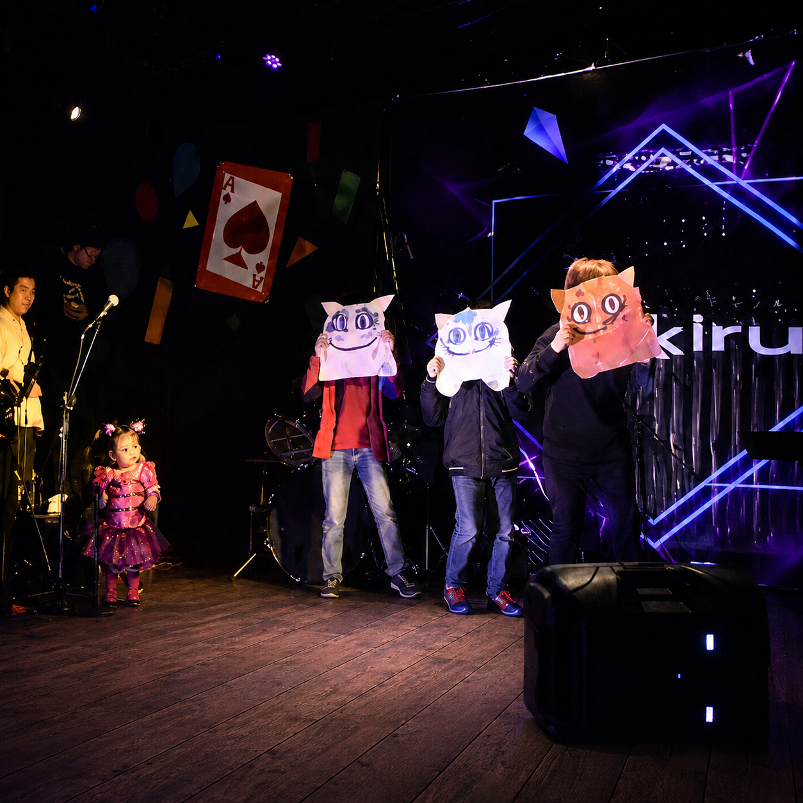

Expresión corporal
Aprende a utilizar postura, gesto y movimiento para comunicar emociones, acciones e intenciones.
Explora el teatro mediante el cuerpo, la voz y la imaginación. Desarrolla interpretación, creatividad, comunicación y seguridad para expresarte frente a otros.

El proceso comienza con juegos teatrales, expresión corporal, voz, escucha e improvisación, avanzando progresivamente hacia escenas, personajes y ejercicios de interpretación.
La formación busca que cada estudiante desarrolle confianza, creatividad y herramientas de comunicación mientras aprende a construir historias y trabajar en conjunto.
Una formación creativa que combina cuerpo, voz, improvisación, interpretación y trabajo escénico.
Aprende a utilizar postura, gesto y movimiento para comunicar emociones, acciones e intenciones.
Trabaja proyección, intención, dicción y escucha para expresarte con mayor claridad y seguridad.
Construye situaciones y personajes mediante ejercicios que fortalecen imaginación y capacidad de reacción.
Integra cuerpo, voz y emoción para dar vida a escenas y personajes con intención y presencia.
Cada clase propone herramientas de actuación que evolucionan de acuerdo con el proceso del grupo.
La práctica fortalece seguridad, expresión y capacidad para compartir ideas frente a otras personas.
Las escenas fortalecen escucha, colaboración y construcción colectiva de historias.
La formación puede complementarse con espacios para presentar escenas y mostrar el proceso artístico.
Este curso está pensado para niños y jóvenes interesados en comenzar o fortalecer su proceso teatral, desarrollar creatividad y descubrir nuevas maneras de comunicarse, interpretar y compartir ideas.
Descubre más herramientas para interpretar, crear y comunicar sobre el escenario.
Agenda una clase gratuita y conoce personalmente la experiencia KIRU.